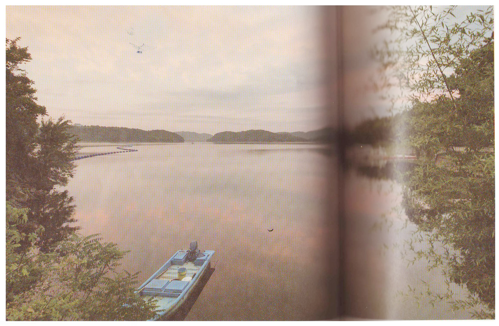

컬러 원근법(color perspective)은 색상이나 톤의 차이에 만들어지는 깊이를 의미한다.
거리가 멀리 떨어진 물체는 근거리에 있는 물체보다 더 작게 보인다. 그리하여 윤곽선이 흐리게 나타나고, 근거리 물체와의 차이에 의해 원근감이 만들어진다.
컬러 원근법을 잘 익히기 위해서는 많은 테스트가 필요하다. 일절한 장소를 선택해서 하루 중 다른 시간대 별로, 다른 기상 조건에서 촬영거리를 달리해 여러 차례 테스트를 해본 후에 그 결과를 비교해야 한다. 이때 테스트 촬영거리는 근경, 중경, 원경 정도의 다소 넓은 범위로 구분해 촬영한다. 이렇게 해서 만들어진 결과물을 분석하여 자신이 원하는 색상과 원근감을 표현할 수 있는 방법을 선택할 수 있다.
사진 41 경남 진주 : 2012
같은 하늘이라도 물에 비친 하늘의 색상은 훨씬 더 강렬하고 원거리에 있는 하늘은 상대적으로 밝다. 이런 이유로 흐릿한 색상의 원거리는 실제보다 더 멀리 떨어진 것처럼 보인다. 이것이 컬러 원근법의 원리다.
[참고문헌]
[1] 원하는 사진을 어떻게 찍는가, 김성민, 소울메이트, 2015. 2. 9. p130
....
....
....
....
....
....
....